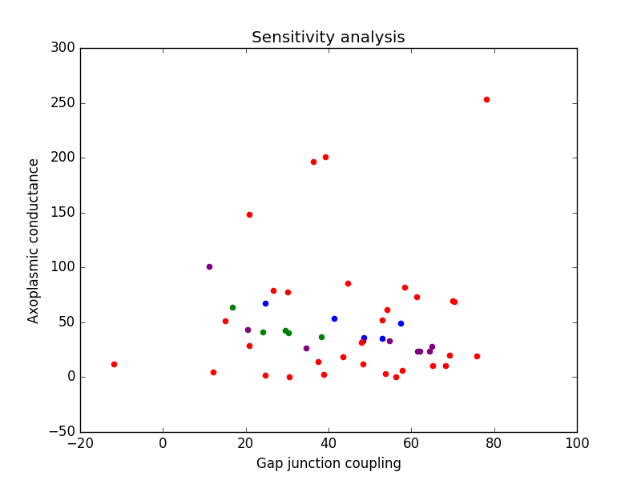

A Hodgkin Huxley model for conduction velocity in the medial giant fiber of the earthworm, Lumbricus terrestris Heller and Crisp 2016 Model summary: The earthworm medial giant fiber (MGF) is composed of many neurons electrically coupled by high fidelity gap junctions. In addition, the MGF exhibits a distinct taper in diameter from anterior to posterior. The role of these gap junctions and their interaction with axonal taper in predicting conduction velocity has not been studied closely in the annelid. A model of an electrical synapse in the MGF was created to investigate the influence of, and interaction between, these two parameters. Model operation: In order to operate this model, open the .py file containing the model code. Both the parameters for axon diameter (d) and strength of gap junction coupling (gc) can be altered randomly about some mean with some given standard deviation. These parameters (mean and standard deviation) must be input by the user. Next, choose how many trials you would like to test by changing the variable "numTrials" at the beginning of the script. You can now run the program. In its default setting the model takes ten minutes or so to generate this figure described below:  Model output: The model will output a scatter plot of succesful combinations of gc (gap junction coupling strength) and ga (axonal conductance). There will be four different categories of points plotted. Red points correspond to failures: the combination of gc and ga for that trial did not meet the physiological requirements. Blue points correspond to fast conduction velocities: combinations of gc and ga that give outputs similar to physiological results in the anterior of the earthworm. Green points correspond to average conduction velocities: combinations of ga and gc that give outputs similar to physiological results in the middle of the earthworm MGF. And finally, purple points correspond to slow conduction velocities: combinations of ga and gc that give outputs similar to the physiological results in the posterior of the earthworm MGF. In addition, these sets of successful data points (the blue, green, and purple points) will be output into three separate .csv files for further analysis, if desired.